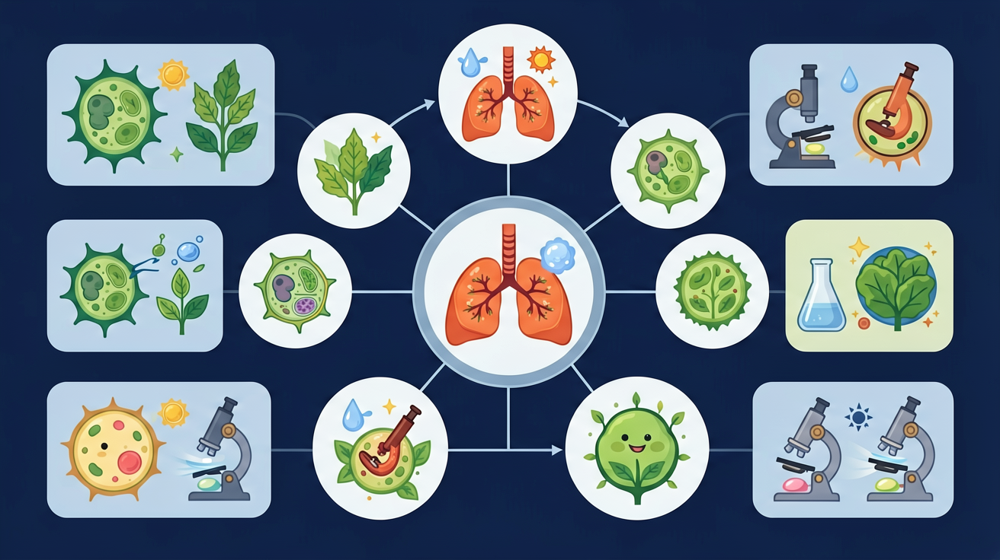

探索呼吸运动机制，理解肺泡气体交换的原理

🎯 能说出呼吸系统的组成器官及其功能
🎯 能分析肺泡结构与气体交换功能的关系
🎯 能判断吸气与呼气时膈肌的运动方向
❓ 为什么跑步时呼吸会变快？
❓ 为什么感冒时鼻子会堵住？
❓ 为什么肺泡长得像小气球？
学完这一课，这些问题你都能自信地回答。
气体进入肺的正确路径是？
呼吸运动主要依靠哪个肌肉？
呼吸道是气体进出肺的通道，同时对空气进行加温、湿润、清洁，保护肺不受伤害。
| 过程 | 膈肌 | 肋间肌 | 胸腔容积 | 气压变化 | 气流方向 |
|---|---|---|---|---|---|
| 吸气 | 收缩（下移） | 收缩（肋骨上移） | ↑ 增大 | ↓ 降低 | 外界→肺 |
| 呼气 | 舒张（上移） | 舒张（肋骨下移） | ↓ 减小 | ↑ 升高 | 肺→外界 |
💡 记忆口诀：膈肌收缩往下走，胸腔扩大吸进来；膈肌舒张往上抬，胸腔缩小呼出去。
选择不同模式观察呼吸运动或肺泡气体交换过程。
用分层动画展示鼻腔→气管→支气管→肺泡的路径
肺泡壁薄+毛细血管网=高效气体交换
对比吸气（膈肌下降）与呼气（膈肌上升）的肌肉变化
显微镜下肺泡表面毛细血管网的真实影像
解释高原反应与肺泡气体交换的关系
设计实验比较安静、慢走、快跑三种状态的呼吸频率
将下方呼吸器官/结构按照气流从外界进入肺的正确顺序，依次拖入右侧编号槽中。
先独立作答，再点选项查看对错与错因。
剧烈运动时呼吸加快的主要原因是
人体内氧气浓度最低的场所是
下列能正确表示呼气过程的是
气体交换的动力来自____作用，氧气最终在____中被消耗。
答案：扩散 线粒体
气体顺浓度差扩散，细胞呼吸作用场所
呼吸道中具有清洁作用的结构有____和____。
答案：鼻毛 黏液
鼻毛过滤大颗粒，黏液黏附微小颗粒
✅ 演示膈肌与肋间肌的协同运动
💡 动画只突出肺部变化
✅ 展示会厌软骨开关动态图
💡 解剖结构认知不直观
口诀：鼻咽喉，气管通，肺泡交换氧气浓
类比：呼吸道像吸管，肺泡像吸管末端的小泡泡
（中考题）下列肺泡特点中，与气体交换无关的是？
游泳时水下呼气，膈肌状态是？
若某人肺泡受损，最可能直接导致？